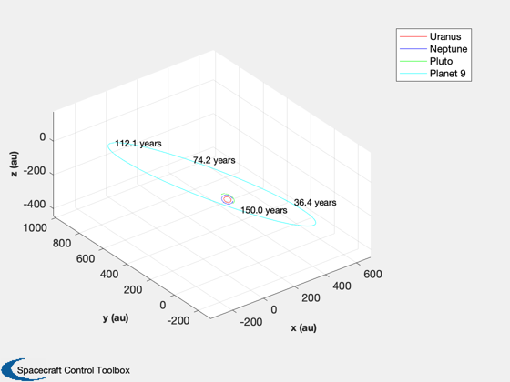
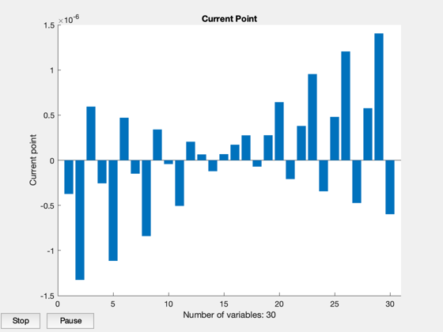
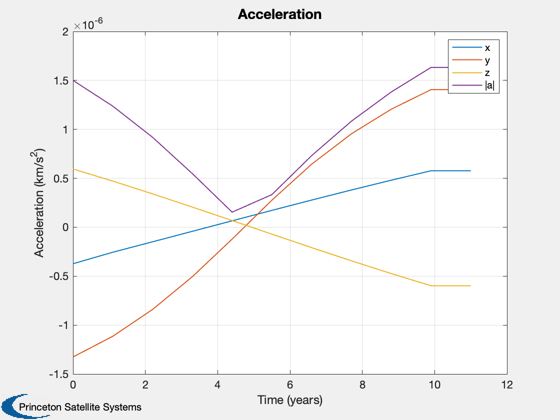
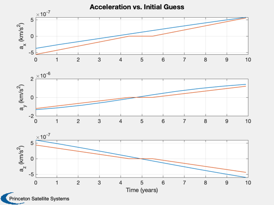
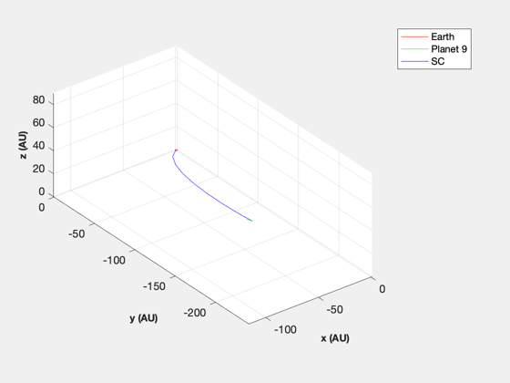
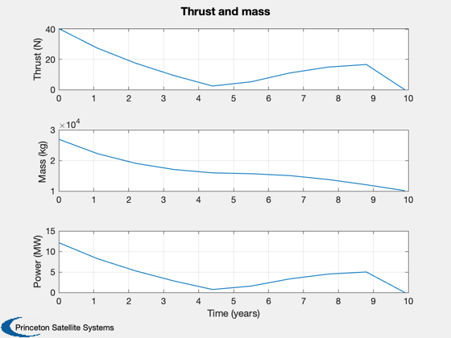

Planet 9 orbit
See also: Constant, RVOrbGen, Date2JD, TrajectoryBetweenTwoPlanets, SpacecraftFromAccel
Contents
%-------------------------------------------------------------------------- % Copyright (c) 2021 Princeton Satellite Systems, Inc. % All rights reserved. %-------------------------------------------------------------------------- % Since 2021.1 %--------------------------------------------------------------------------
Constants
aU = Constant('au'); mu = Constant('mu sun'); secInYear = 86400*365.25; dToR = pi/180; el = [700*aU [30 100 140]*dToR 0.6 0]; [r,v,t] = RVOrbGen(el,[],[],mu); jD0 = Date2JD; HelioPlot([7 8 9],150,jD0,r,{'Planet 9'});
Trajectory
years = 11; % 50, 20 planet1 = 3; planet2.name = 'Planet 9'; planet2.el = el; nSteps = 10; s = TrajectoryBetweenTwoPlanets( jD0, planet1, planet2, years, nSteps );
First-order Norm of
Iter F-count f(x) Feasibility optimality step
0 61 6.975926e-06 8.101e+09 3.992e-06
1 122 9.513127e-06 3.318e+07 2.266e+02 9.655e-07
2 183 9.522518e-06 2.075e+06 8.555e+00 2.363e-08
3 244 9.522470e-06 3.508e+04 8.580e-02 3.695e-10
Optimization completed: The relative first-order optimality measure, 8.580027e-02,
is less than options.OptimalityTolerance = 1.000000e-01, and the relative maximum constraint
violation, 4.330541e-06, is less than options.ConstraintTolerance = 1.000000e-05.
Final Equality Constraints
35082
20231
-13627
0.00010901
6.4317e-05
-4.206e-05
    Size the spacecraft
sC = struct('uE',300,'sigma',2e3,'fS',0.02,'mP',2000,'eff',0.5,'pMin',1); SpacecraftFromAccel(sC,s); %--------------------------------------
Total mission DV: 330.6 km/s Max thrust power: 12.136 MW Total mass: 26959.1 kg Engine mass: 6068 kg Payload mass: 2000 kg Fuel mass: 18001 kg Structural mass: 360 kg